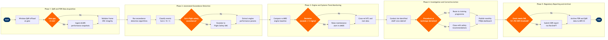

Performance & FDR Data Monitoring
Flight Operations › Network Operations Control · 16 L4 steps · 5 phases · 4 decision gates · Updated 2026-10-01 20:51
📊
Process Flow Diagram (BPMN)

📋
L4 Process Steps
| Step | Step Name | Role / Swim Lane | System | Input | Output | KPI | Dec? | Exc? |
|---|---|---|---|---|---|---|---|---|
Phase 1 1.1 |
Trigger wireless QAR data offload at gate | FOQA Data Engineer | Teledyne Controls GroundLink | Aircraft weight-on-wheels signal; gate docking confirmation | Raw QAR binary file transferred to FOQA ground server | Offload completion within 10 min of gate arrival; flight coverage rate ≥99% | N | Y |
| 1.2 | Validate data frame completeness and CRC integrity | FOQA Data Engineer | Safety Line FOQA Platform | Raw QAR binary file from Step 1.1 | Validated flight data file or data gap report | Data completeness ≥98% of flight duration; frame error rate <0.1% | Y | N |
| 1.3 | Ingest supplemental ACARS performance snapshots | FOQA Data Engineer | SITA ACARS | Data gap notification from Step 1.2 or routine ACARS push | ACARS performance dataframes merged into consolidated flight record | ACARS data merge success rate ≥95%; gap-fill latency <30 min | N | Y |
Phase 2 2.1 |
Execute automated exceedance detection run | FOQA Analyst | Safety Line FOQA Platform | Validated and merged flight data file from Phase 1 | Exceedance event list with parameter name, recorded value, threshold, and timestamp | Detection run completion <30 min per flight; false positive rate <5% | N | N |
| 2.2 | Classify exceedances by severity Cat A/B/C | FOQA Analyst | Safety Line FOQA Platform | Exceedance event list from Step 2.1 | Classified exceedance report (Cat A = flight safety, Cat B = airworthiness, Cat C = crew technique) | Classification accuracy ≥97%; all Cat A events reviewed within 24 hr of detection | Y | N |
| 2.3 | Escalate Cat A exceedance to Flight Safety | Flight Safety Officer | Intelex SMS | Cat A exceedance classification from Step 2.2 | Safety investigation record opened; NOC and crew scheduling notified | Cat A notification delivered to Flight Safety Manager <2 hr of detection | N | Y |
Phase 3 3.1 |
Extract engine performance parameters post-flight | Performance Engineer | Honeywell GoDirect Flight | Completed flight leg identifier; aircraft tail number | EGT margin, N1 deviation, fuel flow, vibration, and oil pressure time series per engine | Parameter extraction completeness ≥99.5%; processing latency <15 min post-landing | N | N |
| 3.2 | Compare engine trends against MRO baseline | Performance Engineer | AMOS by Swiss AviationSoftware | Engine parameter time series from Step 3.1; fleet engine health baseline in AMOS | Engine health trend report; deviation flags relative to fleet statistical baseline | EGT margin loss ≤1°C per flight cycle; alerts triggered at ±3σ deviation from fleet mean | Y | N |
| 3.3 | Raise maintenance alert for engine trend deviation | Performance Engineer | AMOS by Swiss AviationSoftware | Deviation flag exceeding ±3σ threshold from Step 3.2 | Corrective work order raised; borescope inspection scheduled against next available ground time | Maintenance alert actioned within 4 hr of detection; on-wing unplanned engine removal rate <0.05 per 1,000 flight hours | N | Y |
Phase 4 4.1 |
Cross-reference event with ATC and meteorological records | FOQA Analyst | Honeywell GoDirect Flight | Flagged exceedance event from Phase 2; flight leg metadata | Contextualised event report overlaying ATC radar track, METAR/SIGMET, and PIREP data | Contextualisation report completed within 48 hr of event detection | N | N |
| 4.2 | Conduct de-identified ASAP crew debrief | Safety Officer | Intelex SMS (ASAP Module) | Contextualised event report from Step 4.1; crew roster for the flight | Crew disclosure statement; event narrative; de-identified ASAP safety report | ASAP debrief completed within 72 hr of event detection; crew voluntary disclosure rate ≥80% | Y | N |
| 4.3 | Route finding to training or close investigation | FOQA Programme Manager | Intelex SMS | Debrief outcome and root cause classification from Step 4.2 | Training referral issued to LMS, or closed investigation record with corrective recommendations | Corrective action closure within 30 days; recurrence rate for same event type <5% within 12 months | N | N |
Phase 5 5.1 |
Publish monthly FOQA performance dashboard | Flight Safety Manager | Tableau | Aggregated exceedance data and KPI metrics exported from Safety Line FOQA | FOQA monthly report; fleet-level performance dashboard published to safety portal | Dashboard published by 5th calendar day of each month; ≥12 FOQA KPIs tracked and trended | N | N |
| 5.2 | Evaluate event against mandatory SDR reporting threshold | Safety Officer | Intelex SMS | Completed investigation record; regulatory threshold matrix (FAR 121.703, IOSA ISM) | Regulatory reporting decision memo (SDR required Y/N; ASAP report required Y/N) | Mandatory reporting decisions documented within 48 hr of investigation close | N | N |
| 5.3 | Submit SDR or ASAP report to FAA | Safety Officer | FAA DrAFT Portal | Reporting decision memo and closed investigation record from Step 5.2 | Filed SDR or ASAP report; FAA confirmation number recorded in SMS | SDR submitted within 96 hr of discovery per FAR 121.703; ASAP report submitted within 24 hr of event | N | Y |
| 5.4 | Archive FDR and QAR data per FAR 91.609 retention policy | FOQA Data Engineer | AWS S3 | Validated FDR/QAR files, investigation records, and all associated reports | Archived data objects with retention metadata tags; automated deletion schedule per regulation | 100% of FDR/QAR files archived within 24 hr of processing completion; retention period ≥25 hr (FDR per FAR 91.609), ≥2 yr (QAR programme data) | N | N |
📋